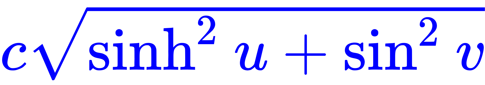

没有人能够意识到他们是多么愚蠢，直到自动拼写纠正不知道他们想要拼出什么。
「有的人呢，就是没有自知之明」（代缘起）
长话短说：「反汉贱种中国通怎么会用Mathematica/Matlab……反汉贱种中国通哪里配用Mathematica/Matlab？」
所以，饥寒交迫且有「自知之明」的孤苦伶仃可怜废柴草根文盲矬胖老穷光棍汉「精神病仆街写手不入流码农数学渣」在恶补过程中，自力更生艰苦奋斗自己动手丰衣足食的时候，决定换成自由民主进步和谐的Maxima/GNU Octave了。
本篇所用素材是充沛着政治和意识形态斗争的京师大学堂数学系钦定教材陈维桓《微分几何》（第二版）附录三。
至于解释器主体和其它功能（如绘图）之间配合不甚默契的细节，在《〈恶补记〉流水账〔５５〕》最后开了个头，相关内容不再重复。
简单说，「参数方程（组）」肯定至少两个对象，通常是以「列表」的方式存在于赛博朋克空间当中。若是限定二维或三维，那么各种语言总有Pair和Triple之类专用数据结构，或者使用泛型的Tuple<>最多七个特指对象另加其它，这些是已经在运行时优化过的。
在《〈恶补记〉流水账〔八〕》当中提到了当年高中时下发过一堆《不等式》《圆锥曲线》《极坐标》《参数方程》之类小册子，但是这些「参考书」直到高考都没用到。现在想起来，那应该是全面深化教育体制改革之前，为了与大学课程相衔接而开设的预备课程。后来嘛，兲朝特色数学教育重分析而轻几何，代数则师资力量不足，于是形成了知乎首页推荐当中充沛的童年才俊援引境外媒体提供之情报而反复吐槽的现状。
画特殊的平面曲线
椭圆
之前使用wxMaxima绘制椭圆的时候，完全照搬了实体出版物字面拼写“ellips”，还特意给出了扫描版截图以示「无一字无来历，哪怕是错别字」（链接见上）。这其中仍然蕴涵着充沛的政治和意识形态内容并引领了激烈的政治和意识形态斗争新动向。
简单说，该附录当中的代码里面「拼写错误」不止这一处。正因为是代码，按理说都是实际调试通过的电子版内容，使用「CtrlCV」即可借鉴到文字处理软件当中，所以可能会有精通英文的朋友对于这种是可忍孰不可忍的「辱英挑衅」表示莫名惊诧。
究竟是负责编纂内容并让「恩师」挂名的「得意门生」之工作态度不甚端正呢，还是为了回避「党性坚定的老审查员」工作态度过于端正而料敌从宽实则虚之虚则实之，目前尚且不得而知。可以参考活跃在九省通衢の煎蛋的宣传工作者振聋发聩的应景评论：
仅从纯粹的技术角度出发判断，因为wxMaxima已经内置了同名函数ellipse，所以笔者我老人家犹豫再三，还是去掉了结尾的字母e
与兲朝境内合法实体出版物保持高度一致。乍一看似乎抱残守缺不敢越雷池一步，但是其中仍然蕴涵着充沛的历史和文化内容并体现了政治和意识形态斗争旧动向。
曰若稽古，在那南不列颠的诺曼龙裔之铁桶江山代代传的过程中，为了与欧洲大陆划清界限，动员盎格鲁撒克逊庶民撸起袖子加油干，为了自己的幸福而不懈奋斗，不再使用法语表明生殖器尊贵，而是尽量使用接地气的「英语」以示亲民。
简单说，包括但不限于盎格鲁在内的日耳曼来源的单词通常「你的……太短」（九省通衢の煎蛋语），就比方说牛津的ox
和芝加哥的bull
；而来自拉丁语和法语的借词通常又粗又长并且血统尊贵，于是「英语的纯洁度本来就和个娼妓差不多」（James D. Nicoll语）。
同样的事情，在百善の新世界又发生了一遍。为了与万恶的旧大陆划清界限，以亚历山大·汉密尔顿（Alexander Hamilton）为首的开国元勋们扶持了「大贤良师」「大成至圣先师」兼「党性坚定的老审查员」诺亚·韦伯斯特（Noah Webster），掀起了轰轰烈烈的「英字简化」运动。
简单说，目前兲朝境内官方钦定英语教学大纲当中，拼写采用美式，而发音沿用英式，最起码上世纪末还是这样。令当年缓则们尴尬的事情就在于此，目前公认的「美式」发音才是当年英吉利移民的口音，而在不列颠本土的「英式」发音已经与时俱进了。
所以，「英吉利正统在美利坚」运动无声无息了，「美语」的说法被废弃。而韦氏「二简字」也被废弃，其中就包括把「英亩」（acre
）写成「美亩」（aker
）。英吉利龙裔趁此机会反攻倒算，于是迄今为止美帝灯塔国是唯一在世俗中使用英制单位的英语国家，连英加澳新都不用英制了。
按照牛顿第三运动定律，韦氏简化字的影响还是反哺了南不列颠及北爱尔兰，比方说标记开音节以示诵读的词尾「沉默的e
」，于是盎格鲁传统风俗习惯当中的Wif
就变成英吉利的wife
了也。与此同时，那些占着茅坑不拉屎的「多磕头少说话的e
」则按照「末位淘汰」原则被坚决清洗出美利坚革命队伍，这些卡位占座专用的蛀虫临死之前到处胡乱攀咬通常还能拉下一个垫背的，就比如program-me
、catalog-ue
那样。
回归主题，使用内置函数ellipse绘制椭圆很简单，以下照搬Maxima手册中的例子，用法详见文档。与其它若干开源软件一样，绘图功能都是默认调用「gnuplot」，细节大同小异。如果按照「课件」惯例，不希望弹出窗口而是在文档内部显示，可以使用「wx-」前缀的版本。
通常绘图，传递的参数是「表达式」并规定「变量」范围，因此需要一个「解方程」的过程，之前已经用常微分方程举例过了。另外还可以使用「隐函数」方式，也就是直接提供「方程」，绘出所有使等号成立的点。
对于笛卡尔坐标系之下椭圆的标准方程来说，相应的绘图是这样的（使用「mgnuplot」「xmaxima」格式）：
顺便发现，使用「Tcl/Tk」界面（见窗口图标）的「xmaxima」格式之场景没有保持坐标比例，并且在Windows上改变窗口尺寸的时候刷新有误，目前的环境下不建议使用。
使用（在笛卡尔坐标系之下）参数方程绘图的内容之前演示过了，不再重复。这里换用极坐标系绘图。
定义离心率，写出原点在中心的极坐标方程，以及原点在一个焦点的极坐标方程并作出相应的绘图。其中要转换极坐标为直角坐标，并使用gnuplot_preamble命令设置绘图的极坐标。
双曲线
因为wxMaxima并没有内置同名函数，所以直接画不废话，但是笛卡尔坐标系之下双曲线标准方程有两种，上下开口的和左右开口的 ，相应的绘图如下：
，相应的绘图如下：
极坐标绘图类似，定义离心率，原点在中心的极坐标方程和原点在一个焦点的极坐标方程相应绘图如下：
同样，参数方程组也有开口不同的两种（简写）：和。
但是与椭圆「半长轴」「半短轴」不同，双曲线有两支，对应参数「半实轴」「半虚轴」正负号组合分别对应四个象限。
这种时候，使用plot2d函数可以分别绘出两支，例子中又定义个函数包装常量，因为绘图用参数（Parameter
）只能有一个；而使用draw2d可以同时画出两支，注意接口不同，parametric不再是参数（Argument
）而是一个函数。相应绘图如下：
到这里还没什么新鲜东西，那是因为教材附录当中的内容简单，只涉及了课本正文当中「很明显，平面上的测地平行坐标系就是通常的笛卡尔直角坐标系」这句，连「显然，平面上的极坐标系就是测地极坐标系」这句都没涉及，本篇中这些极坐标绘图是我脑补的。
而在具有第一基本形式的曲面之上的正交参数坐标系还有其它好几种，就比方说应景的把焦点相同的椭圆族和双曲线族组合起来，就是「椭圆坐标系」。
这个在教材的正文和附录当中都没有，并且市面上「友善」或「不友善」的数学软件当中，都没有提供内置的相应绘图功能，只能自己想办法实现。
对应直角坐标系当中焦点分别在的椭圆坐标系的参数方程组（简写）是，在复平面则为。
因为，所以u的等值曲线是椭圆，半长轴a=ccoshu，半短轴b=csinhu。
因为，所以v的等值曲线是双曲线，半实轴a=ccosv，半虚轴b=csinv。
画出来就是这个样子：
注意这是「坐标系」，两个分量的标度因子都是，也就是通常绘图当中对应的「背景网格」设定。至于椭圆坐标系的应用，据称用于解决「拉普拉斯方程」「亥姆霍兹方程」之类偏微分方程精致而优雅。
抛物线parabola
对数螺线logapiral
旋轮线（摆线）cycloid
双纽线lemniscate
心脏线cardioid
蚶线limacn
悬链线catenary
蔓叶线cissoid
曳物线tractrix
画参数曲面的图形
球面
圆柱面
椭圆环面
八字结旋转面
椭球面
单叶双曲面
双叶双曲面
椭圆抛物面
双曲抛物面
猴鞍面
Möbius带
悬链面
正螺旋面
Enneper极小曲面
Scherk极小曲面
生成曲线/曲面的动画
已知曲率挠率作出曲线图
曲面的保长对应
求曲面的Gauss曲率和Christofell记号
「我曾经是个职业码农，直到膝盖中了一箭」（代后记）
预计写完这些代码之后，并不会「表露出兴奋心情」，想必也不会令谁「至今难忘」。
一点也不奇怪，老迈年高的「精神病仆街写手不入流码农数学渣」，二十年前好歹正经刷过一遍数学基础课，后来噼里啪啦敲代码又是十几年。虽然已经在时光的冲刷中丧失了准确性和熟练度，但是无论看公式还是五颜六色的纯文本，都不至于眼晕。
而童年才俊就不一样了。按照正常课程设置，这「古典微分几何」应该是二年级下学期开设。比我年轻一半的童年才俊们，哪怕是计算机专业，也未必能写出适合生产环境的代码。色目宣传工作者若是不信，就到市面上采访那些兲朝特色信息技术大手会社，看看人事部门对这票祖国花朵之鲜艳程度有什么意见。
凡事总有例外，只有信息技术神童龙裔，除了生殖器比我等贱种屁民不知尊贵到哪里去之外，还从小比人聪明还比人努力，六岁编程，八岁做网站，十三岁开办公司，十四岁就被美帝灯塔国“麻省理工大学”录取为预科生，从此就呼吸百善の新世界之顶尖水平の数学空气去者。